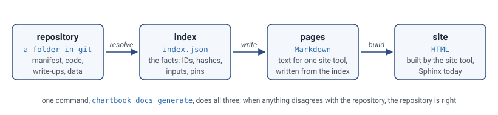
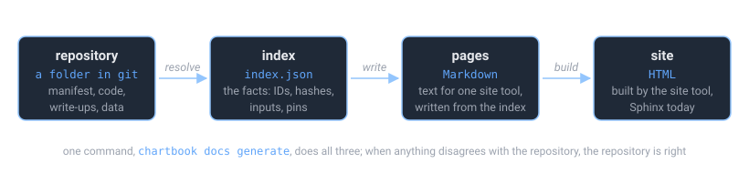

How the Build Works#
chartbook docs generate turns a repository into a site in three steps. Each is a transformation of the
one before, and each leaves something you can look at.


Resolve. Read
chartbook.tomland the files it names, and write the index: one record for every pipeline, dataframe, column, chart, notebook, note and model, each with an ID; a location and a content hash for every file; and, where something was made from something else, its inputs.Write. A writer turns the index into pages for one site tool. The Sphinx writer reads the index and the files the index names (a write-up at its path, a data file for its first rows) and writes Markdown. It reads nothing else: no manifest, no folder walk, no git.
Build. The site tool, Sphinx, turns the pages into HTML. The published index is written beside the site.
Understanding this is useful when a build fails (the exact Markdown Sphinx saw is there to read), when a value on a page looks wrong (the index says what the build recorded), and when you want to change how a page looks (templates can be overridden).
One thing comes before the three steps: whose folder this is. A build reads the files the manifest
names, runs a dataframe’s query for its first rows, and (chartbook build) runs the build
script, so a folder you did not make is built as a version from a store is until you say it is
yours to build: no query run, nothing read from outside the folder, no script run, and a warning
that says so. The first build of it asks you, at a terminal, whether it is yours; chartbook trust
in the folder says it beforehand, and a project chartbook init made is trusted already. See
chartbook trust.
1. Resolve: the index#
The index is built first, before any page, so that every page is a reader of it and says what it says. It is a flat list of records:
{
"schema": "chartbook/index/v1",
"generated_at": "2026-10-15T19:02:11Z",
"generator": { "name": "chartbook", "version": "0.2.0" },
"root": "ftsfr/fed_yield_curve",
"records": [
{ "kind": "Pipeline", "version": "chartbook/v1", "id": "ftsfr/fed_yield_curve", "…": "…" },
{ "kind": "Dataframe", "version": "chartbook/v1",
"id": "ftsfr/fed_yield_curve:treasury_rates",
"ref": { "scope": "ftsfr", "pipeline": "fed_yield_curve",
"kind": "dataframe", "name": "treasury_rates" },
"pipeline": "ftsfr/fed_yield_curve",
"name": "Treasury Rates",
"location": { "kind": "file", "path": "./_data/treasury_rates.parquet",
"modified_at": "2026-10-14T07:54:35Z" },
"content_hash": "sha256:4b1f…",
"size_bytes": 2148374,
"row_count": 15842,
"columns": [ { "name": "date", "dtype": "date" }, { "name": "DGS10", "dtype": "float64" } ],
"date_range": { "first": "1962-01-02", "last": "2026-10-10" },
"sources": ["FRED"],
"docs": { "path": "./docs_src/dataframes/treasury_rates.md", "content_hash": "sha256:9c0e…" } },
{ "kind": "Series", "version": "chartbook/v1",
"id": "ftsfr/fed_yield_curve:treasury_rates#DGS10", "column": "DGS10", "declared": false, "…": "…" },
{ "kind": "Chart", "version": "chartbook/v1",
"id": "ftsfr/fed_yield_curve:chart/curve_today",
"inputs": ["ftsfr/fed_yield_curve:treasury_rates"], "…": "…" }
]
}
What is in it:
An ID for everything, in the form you pass to
chartbook path, written out in full:scope/pipeline:namefor a dataframe,scope/pipeline:chart/namefor a chart. Each record also has the ID as named fields (ref), so a program never has to take one apart.A hash of every file (
content_hash), so two builds can be compared. A dataframe spread over many files has one hash covering all of them; a table or query in a database has a hash of its definition instead.When each file was last written (
location.modified_at), each dataframe’s columns and row count, read from the parquet footer without loading the data, and the span of its date column (date_range, in ISO 8601: a date or a timestamp, as the column is).Whatever the manifest declares for the asset: sources, tags, license, units, a field of your own.
What each asset was made from (
inputs): a chart’s dataframe, a model’s training data. For another pipeline’s data, what it is pinned to (pinned_inputs), and for a model, whether what it was trained on has since moved (trained_with,inputs_now,stale_inputs). In a catalog, also which snapshot of the other pipeline it was trained on (trained_from), and for each pipeline, its snapshots in the store (snapshots).The write-up’s path and hash (
docs), so a build says which text it showed.For the pipeline, when its code last changed according to git (
code_changed_at), and the pages it supplies for its own site (site_pages).
The index records facts about the build, including comparisons it made, and no renderings. A
fact is an ID, a hash, a row count, a pin; a rendering is anything a writer makes from facts.
Vocabulary has the rule and the reasons; Design: the index specifies every
record, and there is a JSON Schema for each kind under chartbook/schemas/ in the package.
Two copies are written. The one beside the site, docs/index.json, is published: it holds no
path from the machine that built it, and is safe to put on a web server with the site. The one in
the build directory, _docs/index.json, is full: each location also has the absolute
resolved_path, which is what the writer reads files by. Keep it with --keep-build-dirs or an
incremental build. From Python, chartbook.index.build_index(load_manifest(".")) returns the
full index without building a site.
Beside it goes docs/llms.txt, written from the same index in the form of
llms.txt: the site’s name, then one line per pipeline, dataframe, chart
and model, with its name linking its page, its ID and, in quotation marks, its owner’s
description, so that an assistant on the command line finds its way around a site without
reading its HTML. It says how to use an ID. A catalog’s lists each pipeline’s ten newest
versions under it, each linking that version’s own llms.txt, and the versions page for the
rest. What an owner wrote never starts a line of the file.
If a build finds nothing different from the index.json already beside the site, it leaves the
file alone, so generated_at is when the index last changed; an incremental build does the same
for llms.txt. chartbook index diff says, in
words, what changed between two builds: data changed, pins moved, a model out of date.
2. Write: the writer#
A writer is chosen by [project] writer in chartbook.toml: "sphinx" by default, or "mkdocs" with pip install chartbook[mkdocs]; both read the same index and write the same pages, each in its tool’s dialect, and the site’s navigation comes from the index either way. The Sphinx writer (chartbook.writers.sphinx) takes the full index and writes one Markdown page
per record that has one, plus the catalog’s own pages:
Record |
Page |
|---|---|
|
|
|
|
|
|
|
|
|
|
{pipeline} is the pipeline’s ID with / replaced by -- (acme/yield_curve becomes
acme--yield_curve), so pages stay one level deep and IDs stay filesystem-safe. Everything
generated lives under cb/, apart from the front page, so your own site pages at the root can
never collide with it.
The writer’s one rule is the index and the files it names, nothing else. A write-up is read
at the path its record gives, and inserted as text, not as a template. A dataframe’s first rows
come from the file (or the database) its record locates; a folder is shown by its parquet parts,
chosen as a read of a folder pinned from a store chooses them (none under a name starting . or _,
no README.txt or schema.json), and a folder with no part yet says so in a sentence; data.load of a
pipeline’s own folder hands the whole folder to polars, which refuses one that mixes file types. “Data updated” is the record’s
modified_at; a model’s scores are the record’s metrics; the diagnostics page is a comparison
the writer makes between each record’s declared fields and the policy the Catalog record
carries. Nothing is looked up in a manifest or a folder.
The times a page shows are in UTC and say so, whatever the zone of the machine that builds it. The one exception is a chart’s date in the chart listings (the “All Posts” page, the archive, and the year, category and tag pages ABlog makes): that day is in the build machine’s own zone, so it can differ by a day from the UTC “Chart updated” on the chart’s page. ABlog publishes a chart only when it is dated before the machine’s next local midnight, and keeps any later one as a draft, out of every listing; a chart written in the evening west of UTC is already tomorrow in UTC. A chart whose file is dated in the future is listed as of the build.
Beside the pages, the build copies the files the index names into the Sphinx tree, again from the records:
From the record |
To |
|---|---|
A chart’s HTML |
|
A notebook |
|
A note |
|
A dataframe’s file |
|
The pipeline’s own site pages ( |
The root of the tree, with |
The diagnostics CSV (_static/diagnostics/chartbook_metadata_diagnostics.csv), the theme’s own
files and conf.py complete the tree.
Templates and overrides#
Each page is rendered from Jinja2 templates. The writer looks for a template, first match wins, in:
the folder of the pipeline the page belongs to (for a catalog’s own pages, the catalog’s folder);
_docs_src/and_docs_src/_templates/, the theme as assembled for this build;the theme directory inside the package (
docs_src_pipeline/ordocs_src_catalog/) and its_templates/.
So to change a page, put a file with the same name in the pipeline’s root:
chart_entry_bottom.md there replaces the footer of every chart page of that pipeline. In a
catalog, each pipeline’s own root is what its pages see; the catalog’s root is searched only for
the catalog’s own pages. A project’s docs_src/_templates/ is not on the list. Only the templates
in the table below are taken from a root: any other file there, a CHARTS.md or a models.md, is
the project’s own and is never read as a template.
Template |
What it controls |
|---|---|
|
The “Data updated …” line under an asset page’s title, “Code updated …” on the front page |
|
A chart page’s head (front matter, title, iframe) and foot (specs, manifests) |
|
The manifest tables |
|
The provenance panel: what an asset was made from, what uses it, pins and versions |
|
The “Dependencies” section of a pipeline’s page: each pipeline it reads from, as declared, and the snapshot or commit it is pinned to |
|
The front page’s layout and tables of contents |
The Sphinx configuration, conf.py.j2, comes from the packaged theme and is not overridable.
A template sees the record’s declared fields as variables (name, description, tags, …), so
inspect _docs_src/_templates/ after a build with --keep-build-dirs to see the defaults and
what they use.
3. Build: Sphinx#
conf.py.j2 is rendered with the project’s name, maintainer and copyright, and the theme
that goes with the project type, into _docs/conf.py. Each of the three is written into a
Python string there, so it is checked first to be one line of plain text (letters, digits,
spaces, accented letters and -_.,!?&:', at most 200 characters); the build refuses anything
else and names the field. Then ChartBook runs
python -m sphinx -M html _docs _docs/_build
with the Python that is running ChartBook, and the extensions the pages use: myst-nb for
notebooks, ablog for the chart listings by date and category, sphinx_design for the catalog’s
cards, sphinx_copybutton. The HTML in _docs/_build/html/ is copied to the output directory
(./docs by default) with a .nojekyll file for GitHub Pages, and the published index is written
beside it.
By default _docs/ and _docs_src/ are deleted afterwards, whether the build succeeded or not.
--keep-build-dirs keeps them, which is what you want when a build fails:
chartbook docs generate --keep-build-dirs
cat _docs/cb/charts/acme--yield_curve.repo_rates.md # the Markdown Sphinx saw
cat _docs/index.json # the full index, with resolved paths
cat _docs/conf.py
Incremental builds and watch mode#
Everything above is a clean build: both directories start empty, every page is written, Sphinx
renders all of them. That is the default, and the right thing in CI. chartbook docs generate --incremental keeps _docs/ and makes the next build do less, in three places.
Unchanged pipelines are not rewritten. Before writing anything, the build takes a
fingerprint of each pipeline: a hash over the modification time and size of every file its pages
are made from (its manifest and README, everything under src/ and docs_src/ and its
site_dir, any .md in its root, which may be a template override, and every file its manifest
declares), together with a digest of what its provenance
panels say, since a panel can change when another pipeline does. A pipeline whose fingerprint
matches the previous build’s is reused: its pages and copied files stay as they are. Editor swap
files, .DS_Store and __pycache__ do not count.
Unchanged pages are not touched. The pages of pipelines that did change, and the site-wide
pages (the front page, the catalog’s lists, conf.py), are written into a staging directory and
synced into _docs/: a file is copied only if its content differs, and a file nothing produces
any more is deleted. Sphinx decides what to re-read from modification times, so a page left alone
is not re-read.
Sphinx keeps its cache. _docs/_build/ survives, so Sphinx re-renders only the pages whose
source changed; if none did and the last render succeeded, it is not run.
The fingerprints live in _docs/.chartbook-build-state.json. Deleting _docs/ is always safe:
the next incremental build is a full one. An upgrade to ChartBook, Sphinx or a theme, an edit to a
packaged template, or a different --size-threshold can change every page, so any of these starts
over from nothing. When the set of pages changes, the rendered site is dropped and every page is
written again from Sphinx’s cache, because Sphinx never deletes the HTML of a page that is gone
and does not redraw the navigation of pages that did not change.
“Changed” is decided by modification time and size, which is cheap enough to check every second and has the usual blind spot: a file replaced by different content of the same size and timestamp is not noticed. A clean build is never wrong; when in doubt, run one.
chartbook docs generate --watch is the incremental build in a loop: build, check the project’s files once
a second (--watch-interval), rebuild when any differs. A build that fails, typically because a
file was caught half-saved, is reported and the loop carries on. There is no server and no live
reload: open the site with chartbook docs open and refresh after a rebuild.
The build directory#
After chartbook docs generate --keep-build-dirs:
_docs/
├── index.md # the front page
├── index.json # the full index
├── conf.py # the rendered Sphinx configuration
├── contributing.md # catalog theme
├── *.md # your own site pages (from site_dir)
│
├── cb/ # everything generated
│ ├── charts.md # the chart listing (ABlog)
│ ├── dataframes.md, models.md, pipelines.md, diagnostics.md # catalog theme
│ ├── pipelines/{pipeline}_README.md # catalog theme
│ ├── dataframes/{pipeline}/{name}.md
│ ├── charts/{pipeline}.{name}.md
│ ├── models/{pipeline}/{name}.md
│ ├── notebooks/{pipeline}/{file}
│ ├── download_chart/{pipeline}/{name}.html
│ └── download_dataframe/{pipeline}/{name}.parquet # when downloads are enabled
│
├── _static/
│ ├── {pipeline}/{name}.html # charts, for the iframes
│ ├── diagnostics/chartbook_metadata_diagnostics.csv
│ └── logo, favicon, custom.css, chartbook-freshness.js
├── _templates/ # the theme's templates, as resolved
└── _build/html/ # Sphinx's output
Debugging#
A chart does not show. Check that
_static/{pipeline}/{name}.htmlwas copied, and thesrcof the<iframe>incb/charts/{pipeline}.{name}.md.A value on a page is wrong. Find the asset’s record in
_docs/index.json. If the record is right, the template is; if the record is wrong, the manifest or the file is.A dataframe page shows an error instead of a glimpse. The file the record locates is missing or not parquet, the folder it names holds no parquet part yet, or the database could not be opened; the page says which.
A template override has no effect. It must be in the root of the pipeline whose pages it should change, under the template’s own name. Compare with
_docs_src/_templates/.Sphinx errors. They name paths inside
_docs/;--keep-build-dirslets you open them.Missing metadata.
_static/diagnostics/chartbook_metadata_diagnostics.csv, and in a catalog the Diagnostics page, list every field the policy requires and each asset lacks.
Next#
Vocabulary: the words this page uses, defined once
Documenting a Pipeline: the manifest that all of this starts from
CLI Reference: every option of
chartbook docs generateDesign: the writer, and what every page shows: the design of the writer, and what every page shows